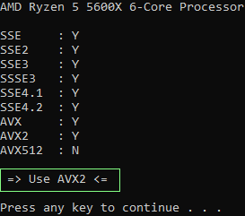

As you install the mods from this section, organize them underneath this separator.
All of the mods in this section are absolutely essential for the mods in the guide to function! Many mods in the following sections are optional, but make sure to get every Utility listed - they are all hard requirements.
| Mod Name | Description | Instructions |
|---|---|---|
|
FNV 4GB Patcher
|
Makes Fallout New Vegas 4GB-aware & automatically loads NVSE |
|
|
xNVSE
New Vegas Script Extender |
Script extender. Required by the majority of mods including TTW |
|
| JIP LN NVSE | Script extender plugin; required by TTW & many other mods | Main File - JIP LN NVSE 56.55 |
| JohnnyGuitar NVSE | Script extender plugin; required by many mods | Main File - JohnnyGuitarNVSE-4.60.7z |
| lStewieAl's Tweaks |
It cannot be overstated just how many different things this mod does & how many mods it replaces/obsoletes. Always check the Tweaks menu before installing additional mods. It is the most versatile and powerful tool you have at your disposal, bar none |
|
| AnhNVSE | Script extender plugin; required by some mods | Main File - AnhNVSE v1.2.0 |
| kNVSE Animation Plugin | Allows for custom animations to be loaded without overwriting, making it possible to use animations made specifically for certain weapons without affecting the others | Main File - kNVSE 20 |
| Mod Limit Fix | Greatly increases the plugin limit by fixing a vanilla bug. Improves performance, even if you are nowhere near the limit | Main File - FNVModLimitFix 2.5 |
| New Vegas Heap Replacer | Replaces the game's default memory management with a more efficient version, resulting in faster load times, reduced stutter, increased performance and stability  |
Pay attention to the line that says => Use <= . For me it says AVX2, but it may be different for you.
|
| New Vegas Tick Fix | Allows New Vegas to run above 60fps without physics issues, while reducing stuttering and increasing performance | Main File - NVTF 9.9.1j |
| ShowOff NVSE | An NVSE plugin which adds new functions, as well as some engine-level tweaks | ShowOffNVSE.7z
If you don't know how to install a mod that isn't from Nexus, re-read the mod installation advice at the end of the MO2 section of the guide |
| yGTM - Gameplay Tweaks and Madness | NVSE plugin that alters, restores and changes gameplay features | Main File - yGTM 2.1a |
In some rare cases, Mod Organizer 2 has issues handling .DLL files and they won't load in-game. If you can not get any of the mods in this section to work per the following instructions, then you should try installing
the mods directly into the game's
Data folder rather than through MO2. The files from the mods should end up in Fallout New Vegas\Data\NVSE\plugins).
~ key (above the tab key) to open the consoleGetNVSEVersion, and the console should print NVSE version: 6GetIsLAA, and the console should print GetIsLAA >> 2>> 0, then the 4GB Patch was applied incorrectly>> 1, then you need to run Mod Organizer 2 as an administratorIsDLLLoaded d3dx9_38, and the console should print
IsDLLLoaded "d3dx9_38.dll" >> 1
>> 0, then Heap Replacer is installed incorrectly
IsDLLLoaded NVTF, and the console should print IsDLLLoaded "nvtf.dll" >> 1
IsDLLLoaded mod_limit_fix, and the console should print
IsDLLLoaded "mod_limit_fix.dll" >> 1
Before clicking the following continue link, you should make sure you passed all of the preceding tests! The Utilities in this section of the guide are required for optimal performance and stability.Continue to Bugfix & Quality-of-Life